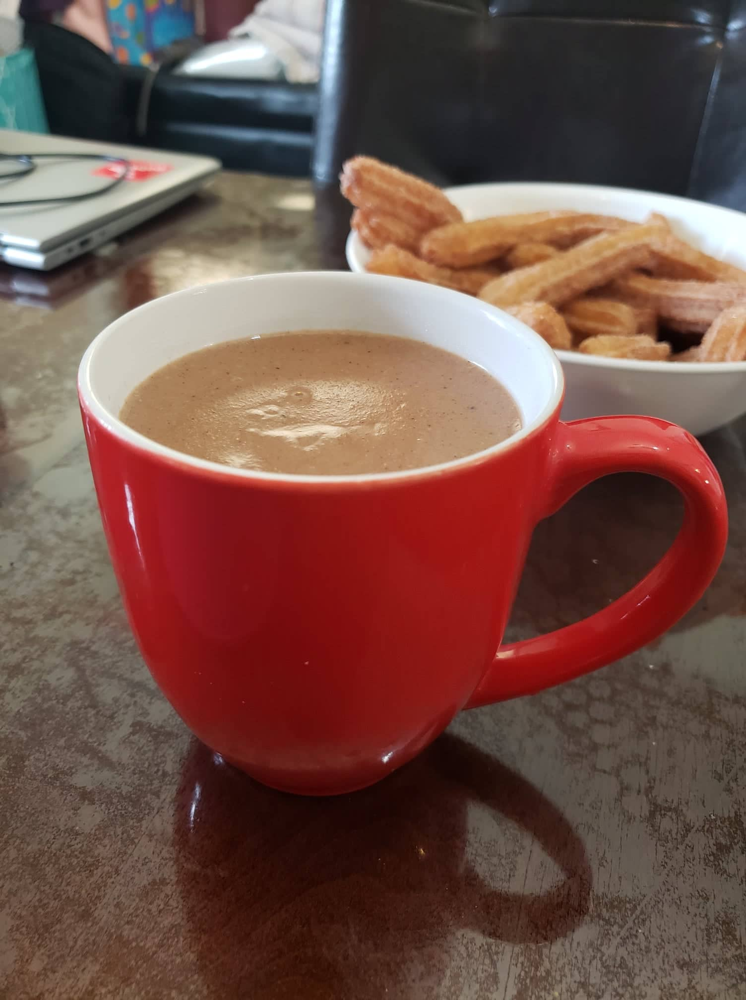

Champurrado

Ingredients:
- 6 cups Milk or Water
- 2-3 oz Piloncillo, or to taste
- 2 Cinnamon sticks
- 2 Mexican chocolate discs
- 2 cups Water
- 3/4 cup Masa harina
Instructions:
- Place 6 cups of milk or water in a large saucepan along with the piloncillo and the cinnamon sticks. Heat until it starts boiling and then reduce the heat and allow to simmer for about 10 minutes or until the piloncillo has melted.
- Once the piloncillo has dissolved, add the 2 Mexican Chocolate Tablets and simmer for about 5 minutes or until dissolved, stirring occasionally.
- While waiting for the chocolate to dissolve, in a large bowl add the masa harina. In small batches, pour in the 2 cups of water while mixing the masa harina. Make sure there are minimal lumps.
- When the chocolate has completely dissolved, slowly pour the masa harina mixture into the saucepan while stirring constantly. Optionally to avoid masa harina clumps, use a strainer to pour the mixture.
- Turn the heat to medium-high until the Champurrado starts boiling, and then reduce the heat to low and gently simmer, stirring constantly. After 6-8 minutes the mixture will thicken. Cook for 5 more minutes and serve.